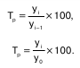
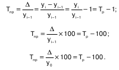

Ряд динамики (хронологический, динамиче–ский, временной) – это последовательность упо–рядоченных во времени числовых показателей, харак–теризующих уровень развития изучаемого явления. Ряд включает два обязательных элемента: время и конкретное значение показателя (уровень ряда).
Каждое числовое значение показателя, характе–ризующее величину, размер явления, называется уровнем ряда. Каждый ряд динамики содержит указа–ния о тех моментах либо периодах времени, к кото–рым относятся уровни.
При подведении итогов статистического наблю–дения получают абсолютные показатели двух видов: моментные и интервальные.
В интервальном ряду величина уровня, предста–вляющего собой итог какого-либо процесса за опре–деленный интервал времени, зависит от продолжи–тельности этого периода.
В моментных же рядах динамики, где тоже есть интервалы, величина того или иного конкретного уровня не зависит от продолжительности периода между соседними датами.
Каждый уровень интервального ряда уже пред–ставляет собой сумму уровней за более короткие про–межутки времени. При этом единица совокупности, входящая в состав одного уровня, не входит в состав других уровней. Поэтому в интервальном ряду дина–мики уровни за примыкающие друг к другу периоды времени можно суммировать, получая итоги (уровни) за более продолжительные периоды.
В моментном динамическом ряду одни и те же единицы совокупности обычно входят в со–став нескольких уровней. Поэтому суммирование уровней моментного ряда динамики само по себе не имеет смысла, так как получающиеся при этом итоги лишены самостоятельной экономической значимости.
В интервальных рядах динамики относительных и средних величин непосредственное суммирование уровней само по себе лишено смысла, так как относи–тельные и средние величины являются производными и исчисляются путем деления других величин.
Сопоставимость уровней ряда динамики – это важнейшее условие обоснованности и правильно–сти выводов, полученных в результате анализа этого ряда.
При изучении динамики общественных явлений статистика решает следующие задачи:
1) измеряет абсолютную и относительную скорости роста либо снижения уровня за отдельные проме–жутки времени;
2) дает обобщающие характеристики уровня и скоро–сти его изменения за тот или иной период;
3) выявляет и численно характеризует основные тен–денции развития явлений на отдельных этапах;
4) дает сравнительную числовую характеристику ра–звития данного явления в разных регионах или на разных этапах;
5) выявляет факторы, обусловливающие изменение изучаемого явления во времени;
6) делает прогнозы развития явления в будущем.
53. Основные показатели рядов динамики.
Простейшими показателями анализа, которые используются при решении ряда задач, являются аб–солютный прирост, темпы роста и прироста, а также абсолютное значение (содержание) 1% прироста.
Если каждый уровень сравнивается с предыду–щим, то полученные при этом показатели называются цепными. Если же все уровни связываются с одним и тем же уровнем, выступающим как постоянная база сравнения, то полученные при этом показатели назы–ваются базисными.
Абсолютный прирост показывает, на сколько единиц увеличился (или уменьшился) уровень по сравнению с базисным. Абсолютный прирост равен разности между сравниваемыми уровнями и измеря–ется в тех же единицах, что и эти уровни:
Δ = yi − y,
Δ = yi − y0-i
Абсолютный прирост за единицу времени (ме–сяц, год) измеряет абсолютную скорость роста (или снижения) уровня.
Цепные и базисные абсолютные приросты связа–ны между собой: сумма последовательных цепных при–ростов равна соответствующему базисному приросту.
Относительными показателями динамики явля–ются темпы роста и темпы прироста, характеризую–щие интенсивность процесса роста.
Темп роста (Тр) – статистический показатель, который отражает интенсивность изменения уровней ряда динамики и показывает, во сколько раз увели–чился уровень по сравнению с базисным, а в случае уменьшения – какую часть базисного уровня соста–вляет сравниваемый уровень. Измеряется отношени–ем текущего уровня к предыдущему или базисному:

Как и другие относительные величины, темп рос–та может быть выражен не только в форме коэффици–ента (простого отношения уровней), но и в процентах.
Между цепными и базисными темпами роста, выраженными в форме коэффициентов, существует определенная взаимосвязь: произведение последо–вательных цепных темпов роста равно базисному тем–пу роста за весь соответствующий период.
Темп прироста (Тпр) характеризует относитель–ную величину прироста и вычисляется по формуле:

Абсолютное значение 1 % прироста, который определяется как результат деления абсолютного прироста на соответствующий темп прироста:
Эта величина показывает, сколько в абсолютном выражении дает каждый процент прироста.